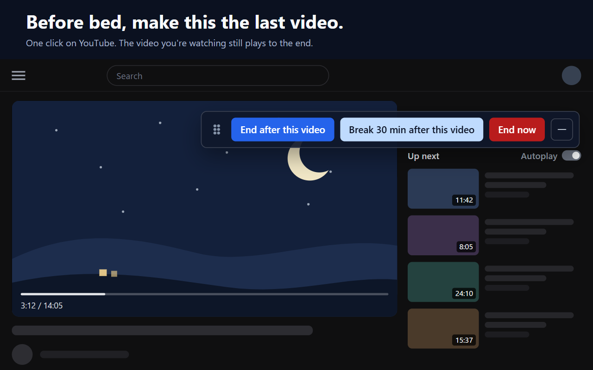
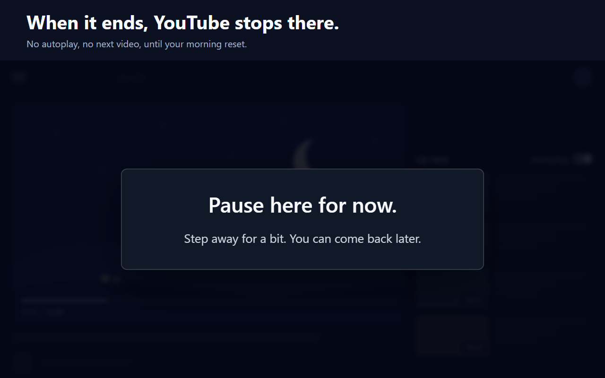
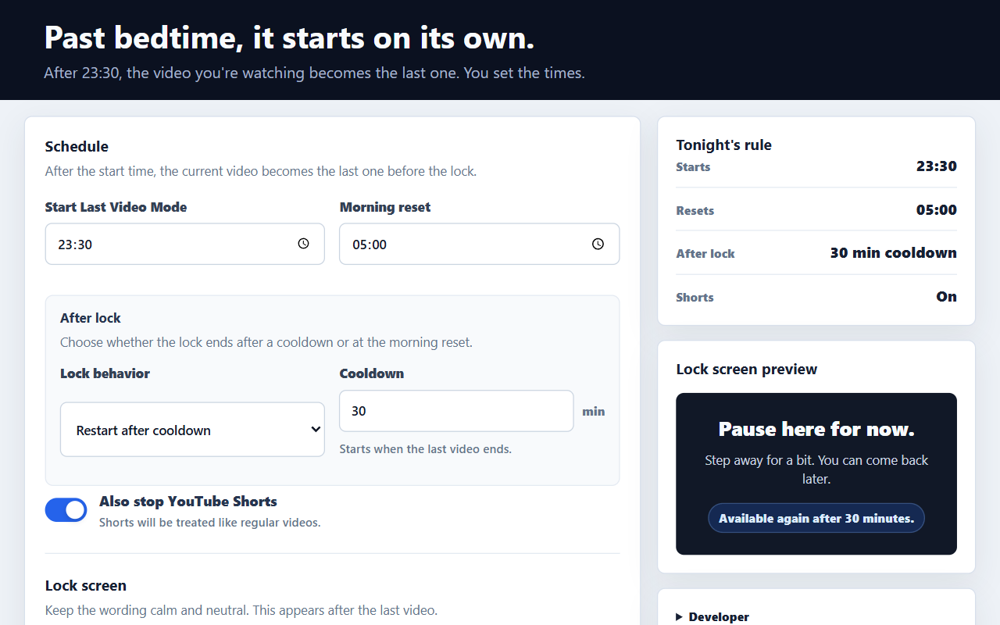

Make this the last YouTube video tonight.
Last Video Mode is a free Chrome extension that works as a bedtime sleep timer for YouTube. The video you're watching plays to the end, then YouTube stops there: no autoplay, no next video, until your morning reset.
Add to Chrome, freeFor Chrome on a computer. No account, no analytics, no external servers.
How to stop YouTube at bedtime
-
1. Choose your last video
On a YouTube video, click "End after this video". You still get to finish it.

-
2. When it ends, YouTube stops
A calm lock screen appears instead of the next video. Then you get a short break (30 minutes by default), or YouTube stays locked until your morning reset (05:00 by default).

-
3. Or let bedtime start it for you
Set a bedtime (23:30 by default). After that time, the video you're watching becomes the last one automatically, even if you forget to click.

Why not just turn off autoplay?
Turning off YouTube's autoplay stops the next video from starting on its own. But late at night it is easy to click one more from the sidebar.
Last Video Mode stops YouTube itself after the video you chose, in every tab, and its settings are frozen while it is on. There is no quick way around it in the moment.
Questions
- Is it free?
- Yes.
- Does it block YouTube?
- No. YouTube works as usual until you decide to stop. It only steps in after the video you chose.
- Can I stop right away instead?
- Yes. Click "End now". To take a break, click "Break 30 min after this video".
- What about YouTube Shorts?
- Shorts are treated like regular videos. You can turn this off.
- What does it know about me?
- Nothing leaves your browser. Settings and lock state are stored in Chrome. It runs only on youtube.com and uses only the storage permission.
- Does it work on my phone?
- No. It is a Chrome extension for computers, and it does not change the YouTube app.